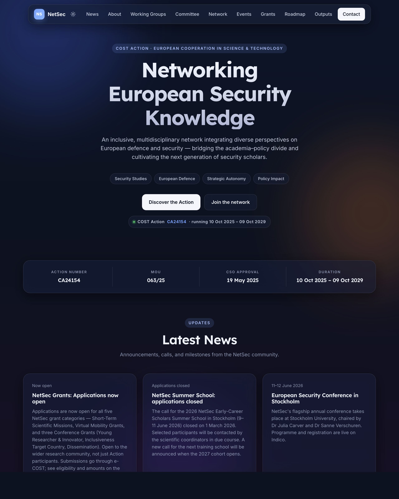
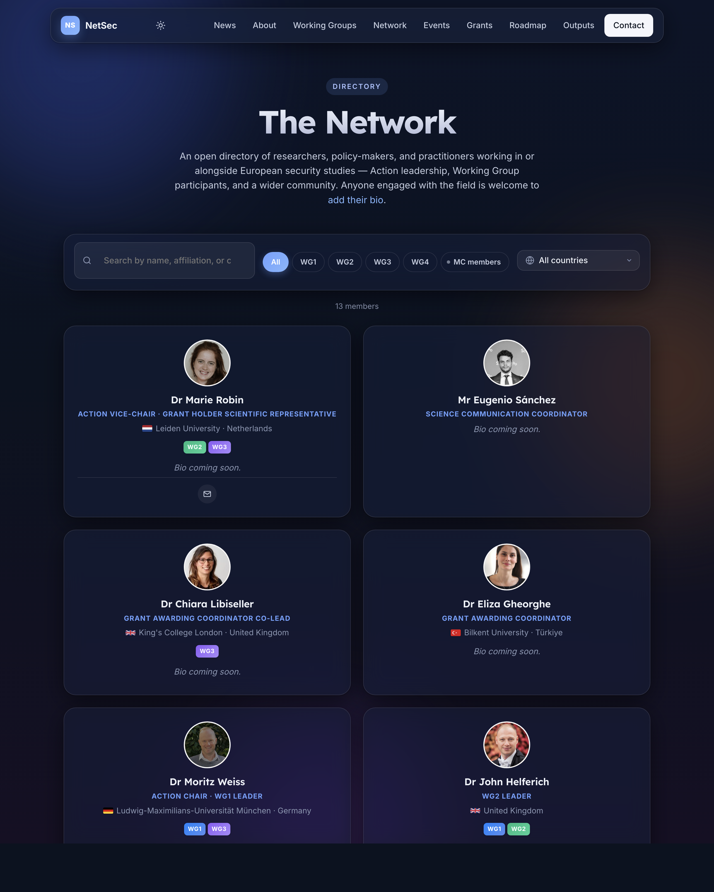
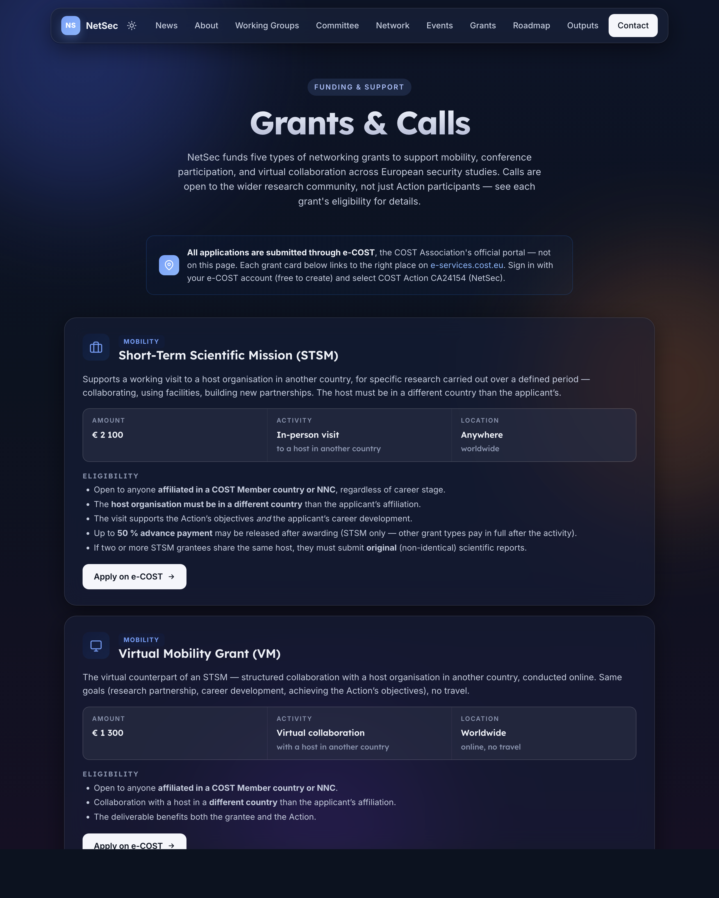

A self-contained reference for everyone who builds on, hands over, evaluates, or simply uses the NetSec website. Each chapter stands alone; read end-to-end for a tour, or jump in by section.
Diagrams in this document are the same Mermaid sources that live in the docs/ folder of the GitHub repository. They render natively on github.com so anyone with read access can navigate the live versions there. The PDF embeds them as a frozen snapshot.
The NetSec website is the official front door of COST Action CA24154 — Networking European Security Knowledge, served at netsec-cost.eu. It is a static GitHub Pages deployment with two scheduled data-sync workflows and one third-party form processor. There is no database, no CMS, and no build step.
It doubles as Deliverable D1 of the Action's Memorandum of Understanding — the open community directory that the Action committed to publishing.
Every decision in the site's design weighs three audiences against each other. A change that helps one without hurting the others is good. A change that needs to "pick a side" probably isn't ready.
Anyone working in or alongside European security studies. The site explains what NetSec is, who's involved, what's on the calendar, and how to engage.
Practical resources: grant calls, the e-COST workflow, deliverables, the roadmap. The Network directory and Grants page are written for them.
COST and the European Commission, for whom the site stands as visible evidence that Deliverable D1 has been met. Privacy compliance, accessibility statement, and licensing terms are written with them in mind.
#main.
The site is deliberately small. No framework, no transpiler, no bundler — just hand-authored HTML, one shared stylesheet, one shared script file, and two scheduled Python jobs that keep the data files in step with their upstream sources.
Three points to take from the diagram:
data/bios.json in the visitor's browser.data/bios.json.| Page | Purpose | Reads at runtime |
|---|---|---|
index.html | Overview, news, WGs, Management Committee, events, roadmap, outputs, contact. | — |
people.html | Open community directory with WG / MC / country filters; Join-the-network CTA. | data/bios.json (all) |
grants.html | Five grant schemes, the e-COST timeline, resources, grant-manager contact cards. | data/bios.json (Grant Awarding Coordinator only) |
sitemap.html | User-friendly site map linking every page and every in-page anchor. | — |
accessibility.html | WCAG 2.1 conformance statement. | — |
privacy.html | GDPR-compliant privacy notice. §10 is the licensing section. | — |
IntersectionObserver.backdrop-filter; graceful fallback.data-bios-roles attribute pattern — any element with it gets hydrated from bios.json at load.mc-members.json.The end-to-end path for a new member submission, from filling in the form to the live directory.

.
├── index.html # Home
├── people.html # The Network
├── grants.html # Grants & Calls
├── accessibility.html # WCAG statement
├── privacy.html # GDPR notice
├── sitemap.html # User-friendly site map
│
├── assets/
│ ├── css/site.css # Single shared stylesheet
│ ├── js/site.js # Nav, theme, reveal, accordions
│ └── images/people/*.{jpg,png} # Member headshots
│
├── data/
│ ├── bios.json # The directory
│ └── mc-members.json # MC roster per country
│
├── scripts/
│ ├── sync-cost.py # cost.eu → WG_MAP + roles
│ ├── sync-bios.py # Google Form → bios.json
│ ├── bios-source.json # Pipeline config
│ └── requirements.txt
│
├── .github/workflows/
│ ├── sync-cost.yml # Weekly cron
│ └── sync-bios.yml # Weekly cron
│
├── docs/ # Internal documentation
├── LICENSE # MIT (code)
├── LICENSE-CONTENT # CC BY 4.0 (prose)
├── README.md
└── SECURITY.md
slugify() in both Python scripts (strip salutation, drop diacritics, drop apostrophes, lowercase, hyphenate). Both scripts must agree or member IDs drift.id on member cards so /people.html#arthur-laudrain resolves.The site follows an Apple-inspired glassmorphism language layered onto EU and COST brand colours. It should feel modern, trustworthy, and Brussels-adjacent without ever feeling corporate.
Defined in assets/css/site.css on :root (light) and :root.dark (dark). Always reference the token, never the raw hex.
| Token | Light value | Used for |
|---|---|---|
--bg-0 | #f6f8fc | Page background |
--bg-1 | #eef2fb | Slight elevation backdrop |
--ink | #0b1220 | Headings, primary copy |
--ink-2 | #2b3850 | Body copy, sub-headings |
--muted | #5a6679 | Captions, meta, fineprint |
--line | rgba(11,18,32,.08) | Dividers, low-emphasis borders |
--glass-bg | rgba(255,255,255,.55) | Default glass card fill |
--glass-bg-strong | rgba(255,255,255,.72) | Sticky nav, opaque cards |
--accent | #003399 EU blue | Primary buttons, focus rings, accents |
--accent-2 | #0a84ff Apple blue | Hyperlinks, secondary accent |
--accent-glow | rgba(10,132,255,.35) | Soft glow under hovered buttons |
--ease | cubic-bezier(.22,.61,.36,1) | Default transition curve |
Dark theme inverts --bg-*, --ink*, --line, and --glass-* but keeps --accent and --accent-2 identical so brand colour is constant across modes.
Both faces load once from Google Fonts via a <link rel="preconnect"> + stylesheet pair in every page's <head>. Heading hierarchy across the site:
| Level | Count | Example |
|---|---|---|
h1 | 1 per page | "The Network", "Grants & Calls" |
h2 | 6–9 | Major sections |
h3 | ~20 | Sub-sections, member names |
h4 | ~18 | Card titles, country names |
Never skip a level (no h2 → h4).
Every distinct visual element belongs to a small, named set of CSS classes. Reuse the existing ones; don't introduce parallels.
.glassThe workhorse card — semi-transparent fill, blurred backdrop, soft shadow, hover lift. Used for news cards, member cards, country cards, grant cards, the search toolbar, and more.
.btn / .btn-primary / .btn-ghostPrimary fills with --ink, hover shifts to --accent. Ghost is transparent with a border and a slight hover lift.
.chip / .wg-chipPill-shaped labels. Working-Group chips are colour-coded 1–4 so a viewer can scan a member card and place them by colour alone.
.timelineVertical timeline on the Grants page — gradient rail with numbered nodes, Before / During / After phase pills, dashed-circle divider at the activity boundary.
.mc-statsThree-up snapshot on the home page (49 reps, 30 countries, ~51 % women). Stacks to one column on phones.
.members-toolbarToolbar at the top of the Network page. Free-text search + WG / MC chip + country dropdown — all AND-combined by the directory's render loop.
Two SVG styles coexist by design:
| Style | When to use | Source |
|---|---|---|
| Stroke | Generic glyphs (envelope, globe, briefcase, microphone) | Lucide-style: stroke="currentColor", stroke-width="1.9", fill="none" |
| Filled brand | Recognisable brand marks (ORCID, LinkedIn, X, Bluesky, Mastodon) | Simple Icons SVG paths; fill="currentColor" (ORCID in brand green via .contact-orcid) |
Same-concept-same-icon rule: every conference grant uses the same microphone icon; every contact-item uses the same envelope. Consistency lets users build muscle memory for what an icon means.
.reveal — fades in + slides up 12 px when intersecting the viewport. Default state is visible; the fade only engages once JS has confirmed the observer fires. If JS fails for any reason, content stays visible — never invisible..blob — three large translucent radial blobs in .ambience, drifting on a 22–34 s loop. Pure decoration; aria-hidden="true".translateY(-4px) + shadow swap.:focus-visible style).aria-label on icon-only buttons; title for hover hints.:hover alone.prefers-reduced-motion.#top (home) or #main (other pages).This section answers: "It's six months later, the maintainer is on parental leave, something needs editing — where do I start?"
| Asset | Location | Owner / login |
|---|---|---|
netsec-cost.eu | DNS registrar | TBC — confirm with Action Chair |
| GitHub Pages routing | Repo Settings → Pages | GitHub org EISSeuropa |
| TLS certificate | Auto-managed by GitHub Pages | n/a (Let's Encrypt) |
| Asset | Login | Notes |
|---|---|---|
GitHub repositoryEISSeuropa/netsec.github.io |
GitHub account in the EISSeuropa org |
Action Chair, Vice-Chair, maintainer. |
| Google Form "Join the NetSec network" | Google account that owns the form | URL stored in scripts/bios-source.json → form_url. |
| Linked Google Sheet | Same Google account | Publish-to-web enabled (CSV). Required-consent step on the form gates what reaches it. |
| Published CSV URL | n/a (public capability) | Stored in scripts/bios-source.json → csv_url. Anyone with the URL can read the Sheet — the form's required-consent step is what gates the content. |
Formspree project (id meenwyrb) |
Formspree account | Free tier; submission destination is the Action mailbox. |
Every admin task below assumes at least two people hold EISSeuropa org membership with Maintain permission on the repository. If that drops to one, escalate.
| Asset | Location | Licence |
|---|---|---|
| COST logo | assets/images/cost-logo.jpg | © COST Association — used per COST visual-identity guidance. |
| EU emblem | Inlined SVG in every footer | Used per the EU visual-identity manual for Funded by the EU communication. |
| NetSec wordmark | Pure CSS letter-mark — no asset | © COST Action NetSec. |
| Member headshots | assets/images/people/<slug>.* | © the individual, displayed with consent. |
| Country flags | FlagCDN (loaded at runtime) | Flags themselves public domain; CDN MIT. |
Both sync workflows open a pull request against main on a dedicated automation branch. Either may be empty most weeks — that's a feature, not a bug.
The reviewer's job is not to fact-check research claims; it's to catch:
members[] entry from data/bios.json.assets/images/people/<slug>.jpg if present.bios: remove <slug> on request.git checkout -b copy/<short-description>*.html file.http://localhost:8000.GitHub Pages rebuilds in ~30 seconds after merge.

| Symptom | First port of call |
|---|---|
| Site returns 404 / 500 | githubstatus.com |
| Sync workflow fails | Actions tab → click the failed run → scroll to the red step |
| Form submissions stop arriving | Formspree dashboard |
| New bio doesn't appear after Monday's sync | Check Google Sheet (row present? consent ticked?) → manually trigger Sync member bios |
| Suspected security issue | Follow SECURITY.md — do not open a public issue |
| DNS / domain issue | Registrar admin; GitHub Pages settings as sanity check |
When admin responsibility moves to a new person:
EISSeuropa org with Maintain role.Full text in SECURITY.md at the repo root. The shape of it:
In scope: the current main branch, the deployed site at netsec-cost.eu, the two GitHub Actions, the Python sync scripts, and any personal data we hold.
Out of scope: older branches, tags, or forks; reports about COST or EU branding; volumetric DoS against third parties (GitHub, Formspree, Google). Those go to the relevant vendor.
Two private channels — not public GitHub issues:
github.com/EISSeuropa/netsec.github.io/security/advisories/new.| Stage | Target |
|---|---|
| Acknowledgement | Within 5 working days. |
| Initial assessment | Within 14 working days. |
| Resolution — Critical | Patch in days; hotfix to main. |
| Resolution — High / Medium | Next sprint, typically 2–4 weeks. |
| Resolution — Low | Routine maintenance. |
| Disclosure | Coordinated; credit on request. |
If you make a good-faith effort to comply with this policy when researching and reporting an issue, we will not pursue or support any legal action against you. Good-faith means: only acting against your own data and the public site, avoiding privacy violations and service disruption, not retaining personal data of others, and giving us reasonable time to fix the issue before public disclosure.
The repository uses dual licensing, matching EU and COST open-access norms:
| What | Licence |
|---|---|
| Source code (HTML / CSS / JS, Python, GitHub Actions) | MIT |
| Site content (prose, page copy, documentation) | CC BY 4.0 |
| Member bios and photographs | © contributors, used with consent |
| Third-party assets (icons, fonts, flags, COST / EU) | Their own licences — see LICENSE-CONTENT |
Suggested attribution when reusing site content:
"Based on content from COST Action NetSec (CA24154), https://netsec-cost.eu, CC BY 4.0."
NetSec — Networking European Security Knowledge · COST Action CA24154 · MoU 063/25 · Running 10 Oct 2025 – 09 Oct 2029.
Documentation v1.0 · Compiled May 2026 by Dr Arthur Laudrain (MC member, CH; ETH Zurich CSS) as part of Deliverable D1.
The views expressed are those of the Action and do not necessarily reflect those of COST or the European Union.